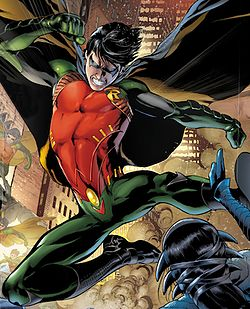

Robin is the name of several fictional superheroes appearing in American comic books published by DC Comics. The character was originally created by Bob Kane, Bill Finger, and Jerry Robinson, to serve as a junior counterpart to superhero Batman. The team of Batman and Robin is commonly referred to as the Dynamic Duo or the Caped Crusaders. The character's first incarnation, Dick Grayson, debuted in Detective Comics #38 (April 1940). Conceived as a vehicle to attract young readership, Robin garnered overwhelmingly positive critical reception, doubling the sales of the Batman related comic books.
The early adventures of Robin included Star Spangled Comics #65–130 (1947–1952), which was the character's first solo feature. Robin made regular appearances in Batman related comic books and other DC Comics publications from 1940 through the early 1980s until the character set aside the Robin identity and became the independent superhero Nightwing.
The character's second incarnation Jason Todd debuted in Batman #357 (1983). This Robin made regular appearances in Batman related comic books until 1988, when the character was murdered by the Joker in the storyline "A Death in the Family" (1989). Jason would later find himself alive after a reality changing incident, eventually becoming the Red Hood. The premiere Robin limited series was published in 1991 which featured the character's third incarnation Tim Drake training to earn the role of Batman's vigilante partner. Following two successful sequels, the monthly Robin ongoing series began in 1993 and ended in early 2009, which also helped his transition from sidekick to a superhero in his own right. In 2004 storylines, established DC Comics character Stephanie Brown became the fourth Robin for a short duration before the role reverted to Tim Drake. Damian Wayne succeeds Drake as Robin in the 2009 story arc "Battle for the Cowl".